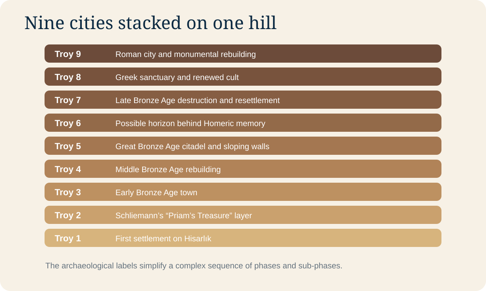

Troy chapters
Nine labels, a much more complex reality
The familiar Troy I–IX sequence is useful, but each “city” contains sub-phases. Treat it as a visitor’s framework rather than a perfect stack of nine clean floors.

Troy I–VEarly and Middle Bronze Age
Growing settlements establish the long occupation of Hisarlık.
Troy VIGreat fortified citadel
Massive sloping walls and towers create the strongest visual candidate for a powerful Late Bronze Age center.
Troy VIIDestruction and crowded rebuilding
Often discussed in relation to traditions of conflict, though archaeology cannot identify Homer’s war.
Troy VIIIGreek sanctuary
The site becomes a place associated with heroic memory and cult.
Troy IXRoman Ilion
Monumental construction reflects imperial interest in Troy’s legendary prestige.
Look for the labels on site. They are not decoration; they tell you which historical Troy the nearby masonry belongs to.